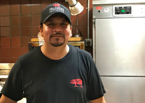
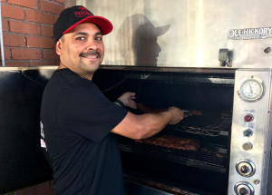

Our Chefs
 Restaurateur George Frasher has returned to his roots and passion: BARBECUE!
Restaurateur George Frasher has returned to his roots and passion: BARBECUE!
George learned the craft of BBQ straight out of the Hotel and Restaurant Management program at the University of Missouri – Columbia. During his college years, he began his culinary career as a dishwasher at the Old Heidleberg. His summers were spent as a cook, server and cruise director at Gateway Riverboat Cruises on the Mississippi River. He also worked at the Gateway Arch along the St. Louis Riverfront. At the age of 22, he opened the K.C. Masterpiece Bar and Grill – Country Club Plaza in Kansas City, Missouri, where he served as the Assistant General Manager. At 23, he was the youngest General Manager for Sam’s Fine Dining Steakhouse in St. Louis. Upon relocating to Arizona, he was a Multi-Unit Manager with El Paso Barbecue before venturing out on his own.
Frasher’s Steakhouse and Lounge, located in South Scottsdale, debuted in 1999. The menu’s distinct offerings included BBQ, steaks, seafood, pasta, sandwiches and St. Louis specialty items. Midwestern hospitality, great food, drinks and music in a casually elegant setting was its forte. It was a popular hangout for locals, the hospitality industry and celebrities alike before closing in 2015.
These ventures have led George to his present position as Owner and Operator of Frasher’s Smokehouse located on Indian School Road & 32nd Street. The smokehouse is a confluence of barbeque styles and techniques. It is a traditional smokehouse where meats are dry rubbed and smoked over pecan wood for long periods of time. “We pull the meat fresh out of the smoker and serve. When we sell out, we sell out for the day.” A variety of house made BBQ sauces are served as accompaniments. The menu also includes traditional made-from-scratch sides with a southwestern twist. The casual, quick-service restaurant features a full bar, but is also family-friendly, offering a children’s menu.
George is a hands-on operator and has developed all the recipes for the Smokehouse, just as he did for the former Frasher’s Steakhouse. These recipes along with the high quality of operations have led to numerous awards and a history of great reviews, most notably: Arizona Republic – 4 stars, Thrillist – Best BBQ Phoenix and Phoenix Magazine – 50 Best Places to Eat. Most recently George was a guest chef for Guy Fieri’s “Players Tailgate” at Superbowl LII in Minneapolis, MN serving 2,000 guests and also judge for the Jack Daniels Invitational and Memphis in May BBQ festival.
Ramon – Jefe de cocina (Chef de cuisine)
Ramon was classically trained in French Cuisine with Italian influences. In his 16 years with Frasher’s, he has developed his own indigenous style of cooking. His many awards include azcentral.com – Best Steak, Arizona Republic – 15 Best Steakhouses, Phoenix Magazine – 50 Best Places, Thrillist – Best BBQ Phoenix, Talk of the Town – 5 Stars (2009-2016), all speaking highly of his culinary skills.
Mario – Head Smoker
Mario has many years of experience in the hospitality industry, but found his true passion 9 years ago when he joined the Frasher’s family. His love for good food, fastidious selection of wood, and dedication to producing the best possible meal for his patrons all shine through in his superb finished products.